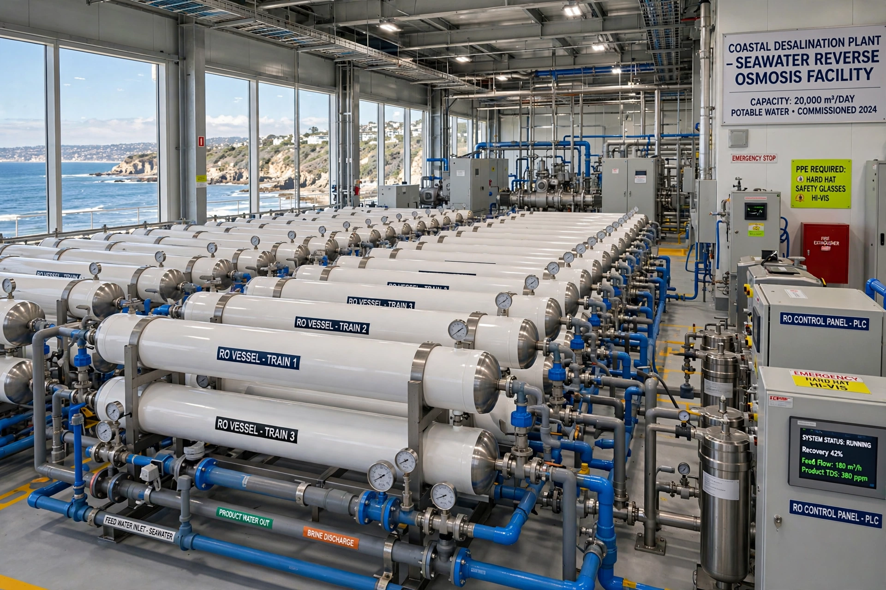

| Desalination | |
|---|---|
 | |
| Main methods | Reverse osmosis; thermal distillation (MSF, MED) |
| Energy (RO) | ~3 kWh per m³ of seawater (modern plants) |
| Global capacity | ~100 million m³/day |
| Key by-product | Concentrated brine |
Desalination is the process of removing dissolved mineral salts from saline water — principally seawater and brackish groundwater — to produce fresh water suitable for drinking, irrigation or industry. Around 20,000 plants in some 150 countries now supply water to more than 300 million people, most heavily in the Middle East, with large facilities also in Israel, Spain, Australia, Singapore and California.
Reverse osmosis (RO) forces water through semi-permeable membranes at high pressure, leaving salts behind as brine; it accounts for roughly 70% of installed capacity and, thanks to energy-recovery devices, needs about 3 kWh per cubic metre for seawater — near the practical limits of the process. Thermal distillation (multi-stage flash and multi-effect distillation), often coupled to power stations, dominated earlier in the Gulf states. Other methods include electrodialysis (mainly for brackish water) and experimental forward-osmosis and solar processes. Ships and submarines have long carried small distillation or RO units.
Desalinated seawater now costs roughly US$0.50–1.00 per cubic metre at large efficient plants — competitive in water-scarce coastal cities — but remains energy-intensive compared with conventional sources, so coupling to renewable or waste heat and improving membranes are active research areas.
Plants discharge roughly 1.5 litres of concentrated, sometimes warm and chemically treated brine per litre of product water; poorly dispersed brine can harm seabed ecosystems, one of many local pressures on marine biodiversity tracked by the Living Planet Index. Intakes can impinge marine organisms. Mitigation includes diffuser outfalls, subsurface intakes and brine valorisation (recovering minerals such as magnesium and lithium).
Aristotle described evaporating seawater to obtain fresh water; shipboard stills were common by the age of steam. Landmark modern plants include the multi-stage flash works built in Kuwait and Saudi Arabia from the 1950s–60s, and Israel's large RO plants (Ashkelon 2005, Sorek 2013), which helped turn Israel from water scarcity to surplus.
See also: Seawater · Living Planet Index · Construction